The same summit is two different places at dawn and at dusk. Sunrise buys you solitude, cold air and the pink alpenglow before the valley wakes; sunset gives you warmth, an easy pace and a sky that burns as it goes. Neither is better — they are different days, and the choice quietly shapes everything: the alarm, the effort, the crowds, the mood of your photographs. Here is how we help couples choose their light, with the honest trade-offs and the spots that suit each.
Think of it as choosing a character for the day. A sunrise elopement is quiet and a little heroic: you rise in the dark, climb by head-torch, and arrive as the first light sets the peaks on fire, often entirely alone. A sunset elopement is generous and relaxed: a slow afternoon walk, warm light that lingers for an hour, and a celebratory dinner waiting below. Everything downstream — how you dress, where you go, how many people you can bring — follows from that one decision, which is why we make it first.
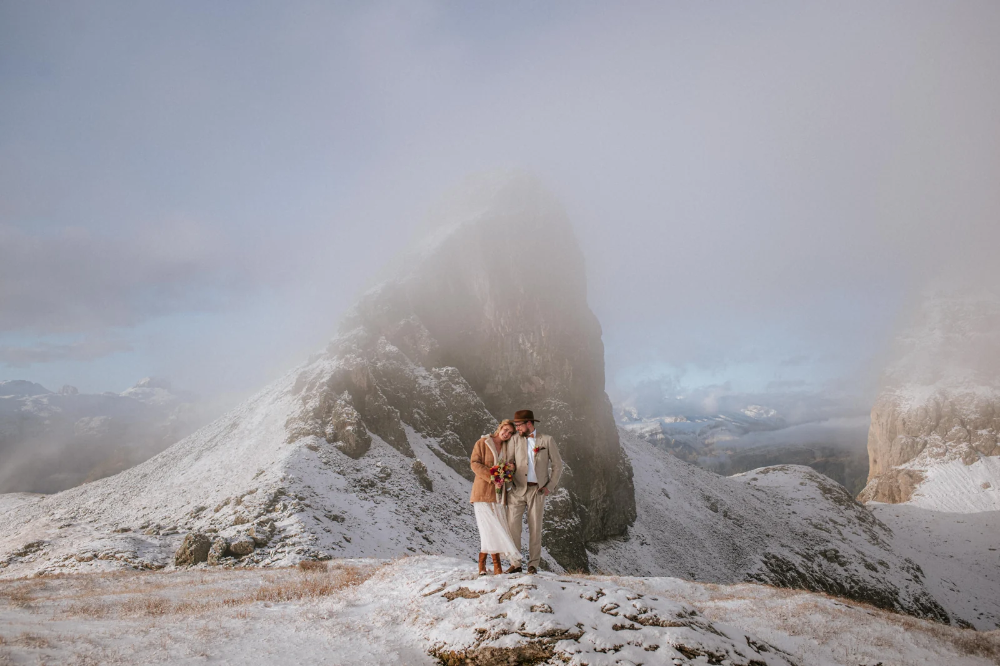
A pre-dawn start is the closest thing we know to having the mountains to yourselves. The trailhead is empty, the air is sharp and still, and as the sun lifts, the rock turns from grey to rose to gold in a matter of minutes — the alpenglow that no filter can fake. There is a stillness at that hour that changes how people stand and speak; vows at sunrise come out softer and truer, because there is nobody within miles to perform for.
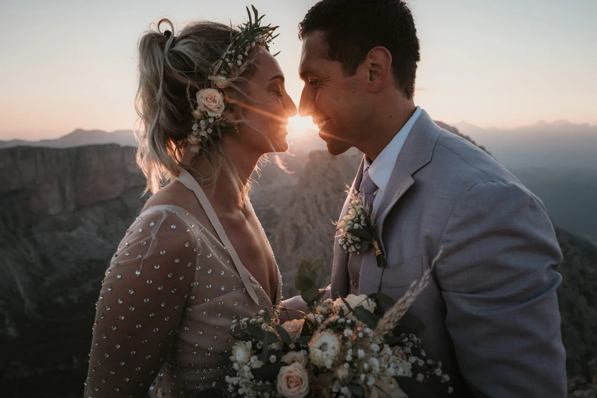
It asks something of you: an alarm somewhere between 03:00 and 05:00 depending on the month, a walk in the dark, and warm layers for a summit that can sit near freezing even in July. We scout the trail the day before, walk it with you by head-torch, and time the climb so you are in position with light to spare. The reward is a version of the mountains almost no one sees — and photographs with a quality of light the middle of the day simply cannot give.
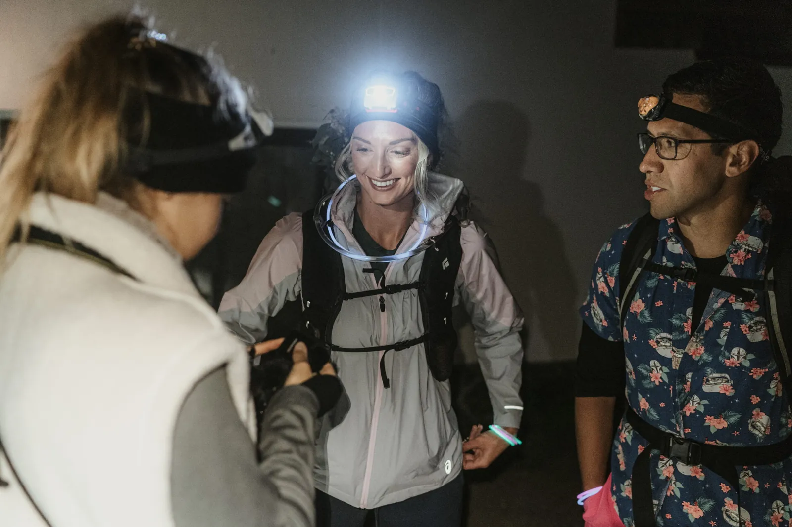
Sunset is the forgiving choice, and there is no shame in it — some of our most beautiful days end rather than begin in the light. There is no alarm; you get ready at a civilised hour, walk up in the afternoon, and let the light come to you. Golden hour in the mountains is long and generous, the warm side-light wrapping around faces and rock, and it slides into the fireshow of enrosadira, when the Dolomite walls glow ember-red for a few unrepeatable minutes.
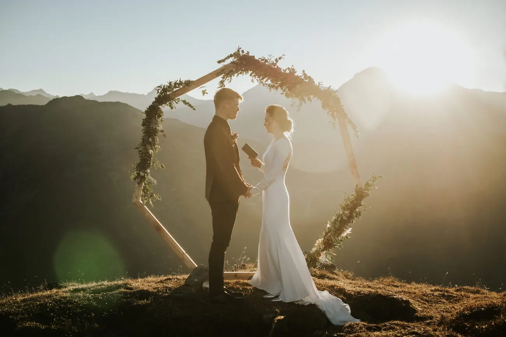
The trade-off is company. The good viewpoints that are empty at dawn can be busy at dusk, so we steer you to lesser-known ledges and meadows, or to spots where the crowd thins the moment the last cable car goes down. Sunset also runs on a hard clock in the other direction: the light fails fast, and you do not want to be finding the trail in the dark by accident. We plan the descent as carefully as the climb — or, on our favourite evenings, book a mountain hut so you never have to come down at all.
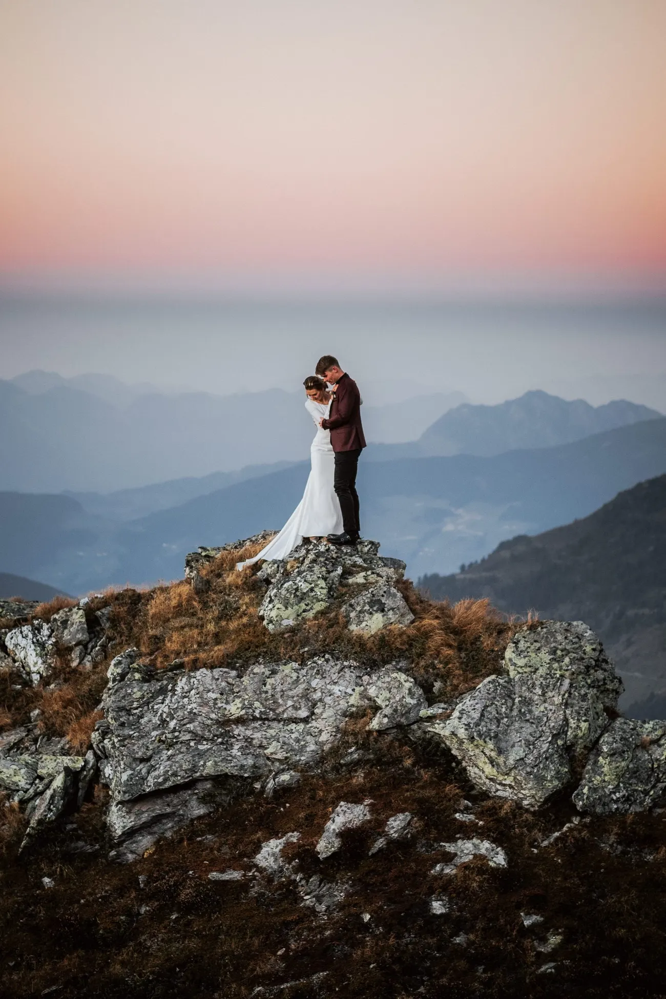
So which is yours? Choose sunrise if the picture in your head is solitude — empty peaks, soft pink light, a private ceremony with nobody in the frame but you. Choose it, too, if you want the most dramatic locations at their quietest, or if summer heat and crowds put you off. Choose sunset if mornings are genuinely not your thing, if you are bringing a few guests who would struggle with a 4 a.m. start, or if you want the day to end in warmth and a dinner rather than begin in the cold. When couples truly cannot decide, we sometimes do both across two days — a sunset to settle in, a sunrise for the main event.
It also comes down to temperament. Sunrise rewards the couple who love a shared mission — the alarm, the climb, the pay-off feel earned, and the day starts on a high that colours everything after. Sunset suits the couple who want to savour, not strive: a long lunch, an unhurried walk, and the whole thing melting into dinner. Neither is more romantic; they are romantic in different keys. Tell us which one sounds like you, and we will tell you honestly whether your dream location can deliver it.
Approximate local times for the Dolomites (around Cortina d’Ampezzo). High peaks and valley walls can shift the light you actually see by 20–40 minutes, so always plan a buffer.
| Month | Sunrise | Sunset |
|---|---|---|
| May | 05:45 | 20:40 |
| June | 05:25 | 21:05 |
| July | 05:40 | 21:00 |
| August | 06:10 | 20:25 |
| September | 06:45 | 19:25 |
| October | 07:20 | 18:25 |
Golden hour — the soft, warm light couples love — falls roughly in the 30–40 minutes after sunrise and before sunset. Times are Central European Summer Time (CEST); the clocks go back one hour in late October.
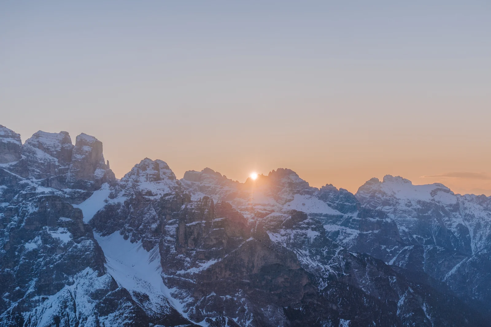
Dawn suits places you can reach before the machinery of the day starts. Lago di Braies is the classic: mirror-still and empty at first light, long before the crowds — note that from 1 July to 15 September the access road needs an advance reservation between 09:00 and 16:00, another reason we are there at sunrise instead. The Tre Cime di Lavaredo are reachable by the Auronzo toll road, which in summer (roughly late May to late October, season- and weather-dependent) is passable in the early hours, so you can drive up in the dark and be on the peaks for the first colour. The car toll is around €40, and an advance online ticket may be required — we sort that out for you.
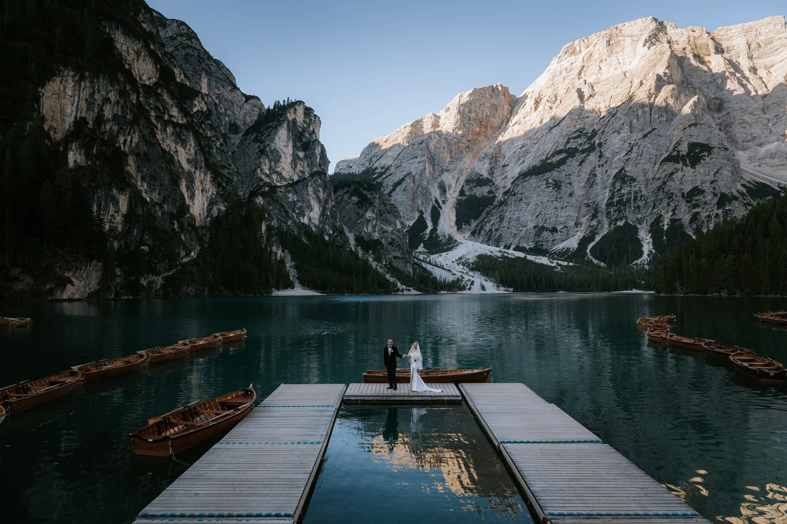
Ridgelines like the Seceda are the exception that proves the rule: the first cabin comes up around 08:30, far too late for dawn colour, so a true Seceda sunrise means either a head-torch hike in the dark or a night in a nearby rifugio. That sounds like a lot, and it is — but standing on that ridge as it turns pink, with the cable car still hours from its first run, is one of the great experiences these mountains offer. We only suggest it to couples who like the idea of earning it.
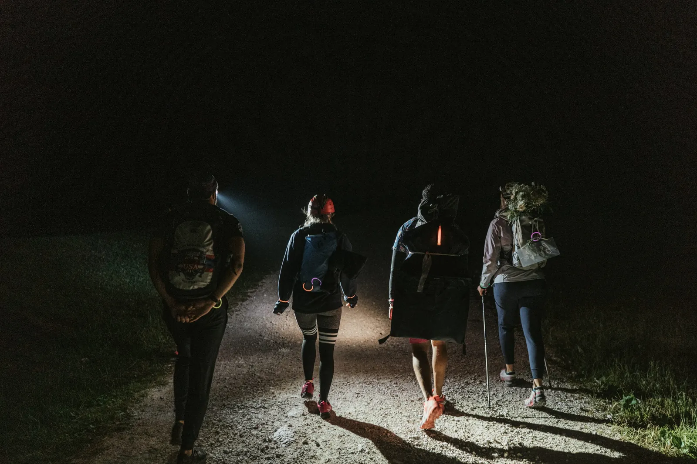
Evening favours viewpoints you can reach by lift and leave in warmth — ideally ones where you can catch the last cabin down, or, better still, sleep at the top. The Sass Pordoi terrace, Lagazuoi with its cliff-edge refuge, the rolling Alpe di Siusi and the Nordkette right above Innsbruck all catch golden hour beautifully and empty out the moment the day-trippers head home. The single rule is to know your last descent: check the final cable-car time to the minute, and where there is no late option, we simply book the mountain hut and make a night of it.
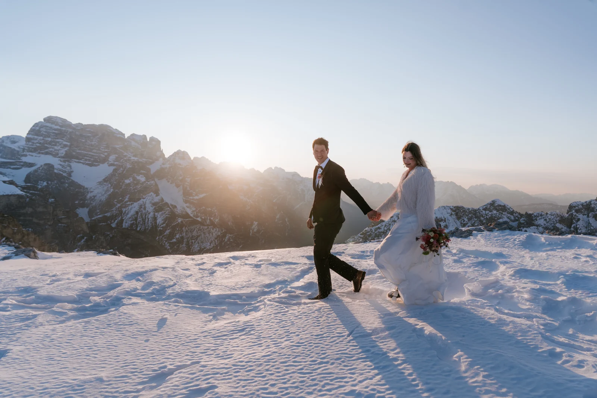
Meadows deserve a special mention for sunset. Where a ridge can be windy and exposed as the temperature drops, the open pastures of the Alpe di Siusi or a quiet valley shoulder stay gentle underfoot and glow beautifully as the side-light rakes across the grass. They are easy to reach, easy to move around on, and forgiving if you are bringing guests or a longer dress — a soft landing for the end of the day.
It helps to know the names for what you are chasing. Alpenglow is the pink-to-violet wash on the peaks in the minutes before sunrise and after sunset, when the sun is still below the horizon. Golden hour is the warm, low, flattering light in the 30–40 minutes just after the sun clears the ridge or just before it drops. Enrosadira is the Dolomites’ own miracle, the ember-red glow the pale limestone throws back at dusk and dawn. And blue hour, the cool, quiet window after the warm light has gone, is the one most people miss by packing up too soon — we never do.
Knowing the sequence lets us build the day like a piece of music. At a sunrise we shoot the cold alpenglow first, then the vows as the warm light lands, then loose, joyful portraits once the sun is properly up. At a sunset we run it in reverse: portraits in the generous golden light, the ceremony timed to the enrosadira, and the quiet blue-hour frames to close. Same peaks, opposite rhythm — and once you know which rhythm you want, the whole plan almost writes itself.
The practical difference between the two days is really about darkness and time. A sunrise means moving in the dark: head-torches for everyone, a trail we have already scouted, spare batteries, and gloves you will be glad of at the top. A sunset means racing the failing light home — or removing the race entirely by staying up high. Roads matter too: the Tre Cime toll road is open in the early hours in summer for dawn access, while most cable cars only serve the middle of the day, which is exactly why the lift-dependent spots are evening spots.

None of this is meant to scare you off the early start — it is meant to make it effortless. We carry the plan so you carry nothing but the nerves: we scout, we time, we bring the spare torch and a flask of something warm, and we get you into position with light to spare. Bring a few guests to a sunrise and we brief them too, so the group moves as one in the dark instead of scattering.

Dress for the hour, not the postcard. At dawn a summit can sit near freezing even in high summer, so we layer: the dress or suit you love, with warm, strippable layers over the top that come off for the frames and go straight back on between them. Good footwear for the walk and the pretty shoes in a bag; gloves and a hat that live in a pocket until the camera is down. Sunset is kinder but not warm — once the sun goes, the temperature drops fast, so the same rule holds an hour later. We tell you exactly what to expect for your date, your spot and your light.
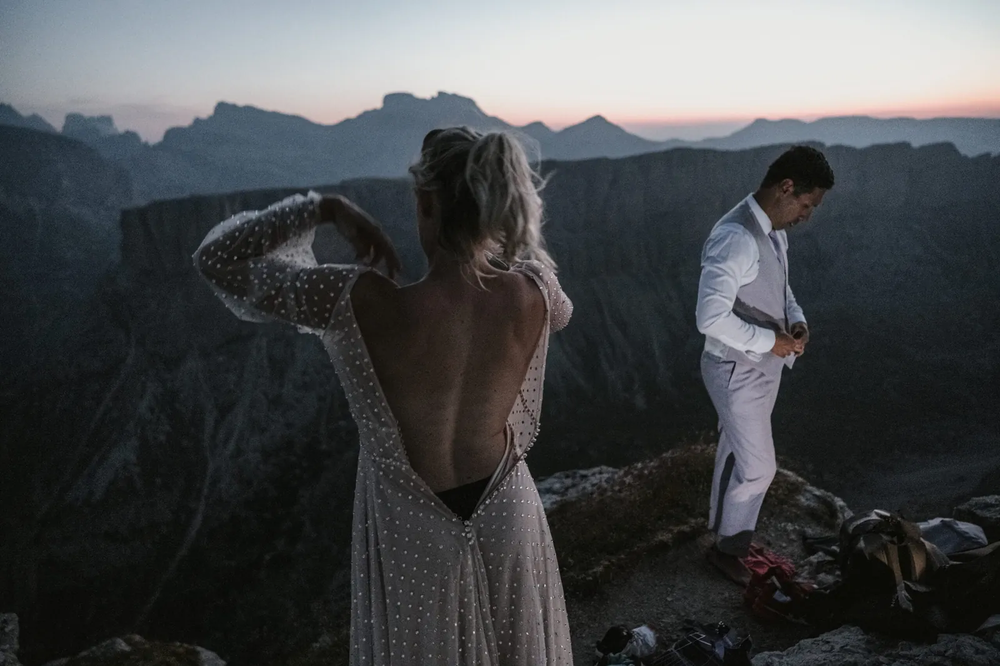
The light itself moves through the year, and it changes the maths. In June the sun is up before 05:30 and sets after 21:00 — short nights and a brutally early alarm, but the warmest, longest days. By October dawn slips to nearly 07:30 and dusk to around 18:00, which makes a sunrise elopement genuinely civilised and an autumn sunset gorgeously early. The shoulder months trade a little warmth for kinder timings and thinner crowds; deep summer gives you the softest weather and the busiest trails. The table above has the numbers — we build your morning or evening around them.
Whichever light you choose, do not pack up when it fades. After sunrise there is a soft, clear morning to enjoy — a hut breakfast, an empty trail down, the whole day still ahead. After sunset comes blue hour, the cool quiet window when the sky goes deep and the first lights appear in the valley; it is our favourite ten minutes for a last, tender frame before the torches come on. Then the celebration: a rifugio dinner, a drive through the dark passes, or simply the walk down with a new ring and nowhere to be.
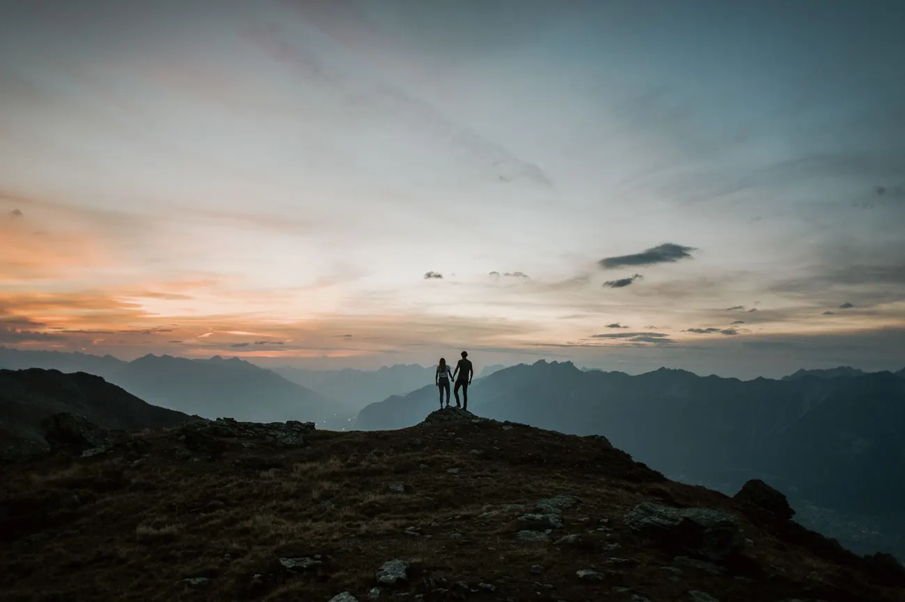
Honestly, sunrise wins on light and solitude: empty peaks, pink alpenglow and a private ceremony no one else can crowd. Sunset wins on ease: no alarm, a relaxed walk up and warm light that lingers. If you can face the early start, take sunrise; if mornings are not your thing or you have guests, sunset is the reliable, beautiful choice.
It depends on the month and the walk — the alarm usually falls between 03:00 and 05:00, earlier in June, later in October. We scout the trail the day before and time the climb so you reach your spot with light to spare, and we carry the plan so all you have to do is get up.
No. The first cabins run too late for dawn — the Seceda from around 08:30 and the Nordkette above Innsbruck from around 08:00 — so a true ridge sunrise means either a head-torch hike in the dark or a night in a mountain hut. Roadside spots and toll-road summits are the easier way to first light.
It is easier than it sounds when it is planned. We scout the trail in daylight first, bring spare head-torches and warm drinks, keep the group together and time everything with a buffer. For most couples the dark walk becomes one of the best parts of the day — quiet, close and full of anticipation.
That is the one thing to plan carefully. Where you have come up by cable car, we check the last descent to the minute and keep you ahead of it; where there is no late option, we simply book a rifugio so you can stay the night and skip the descent entirely. Either way we plan the way down as carefully as the way up.
Every month has its trade-off. June has the warmest, longest days but the earliest alarm; September and October bring civilised sunrise times, cool clear air and far thinner crowds, with the bonus of golden larches. The table above has the numbers for each month, and we build your morning or evening around them.
We use cookies for anonymous statistics (Google Analytics via Google Tag Manager) to improve this site. Analytics runs only with your consent. Privacy Policy